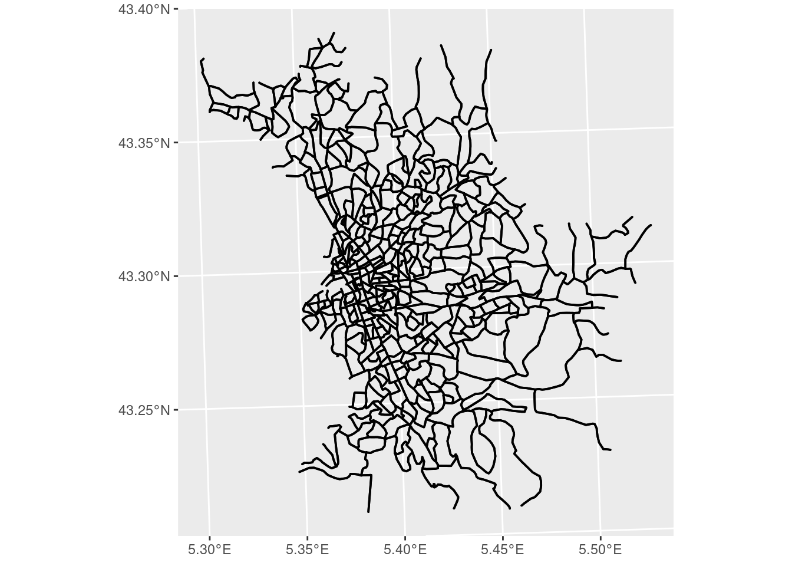
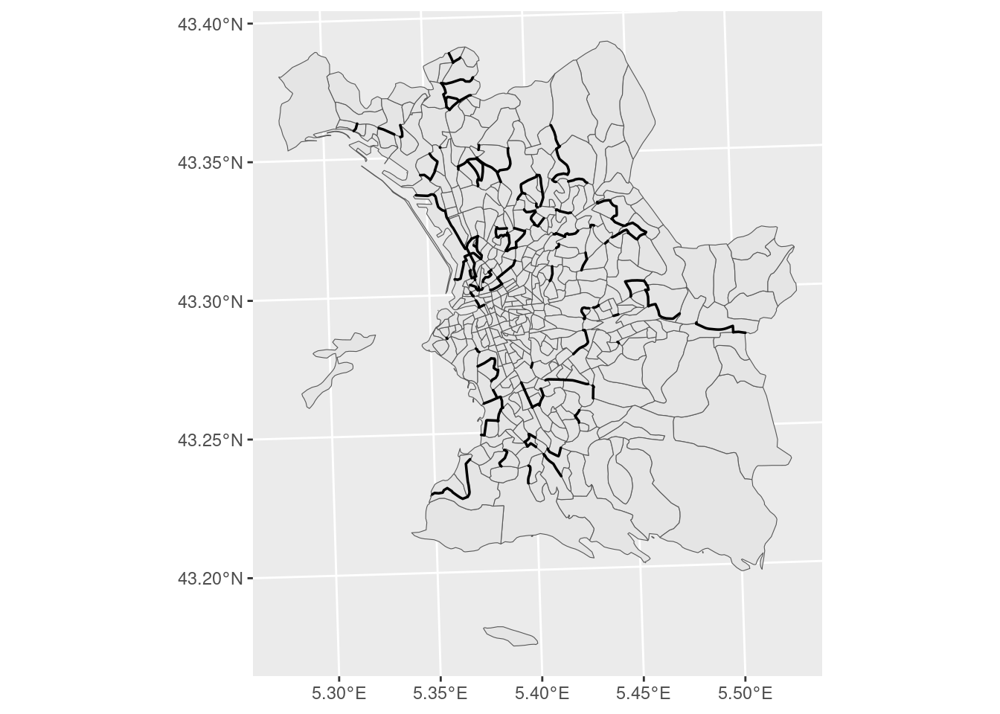
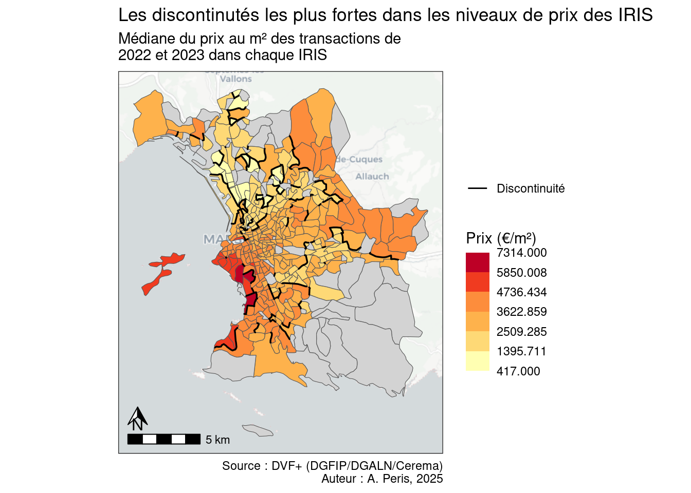
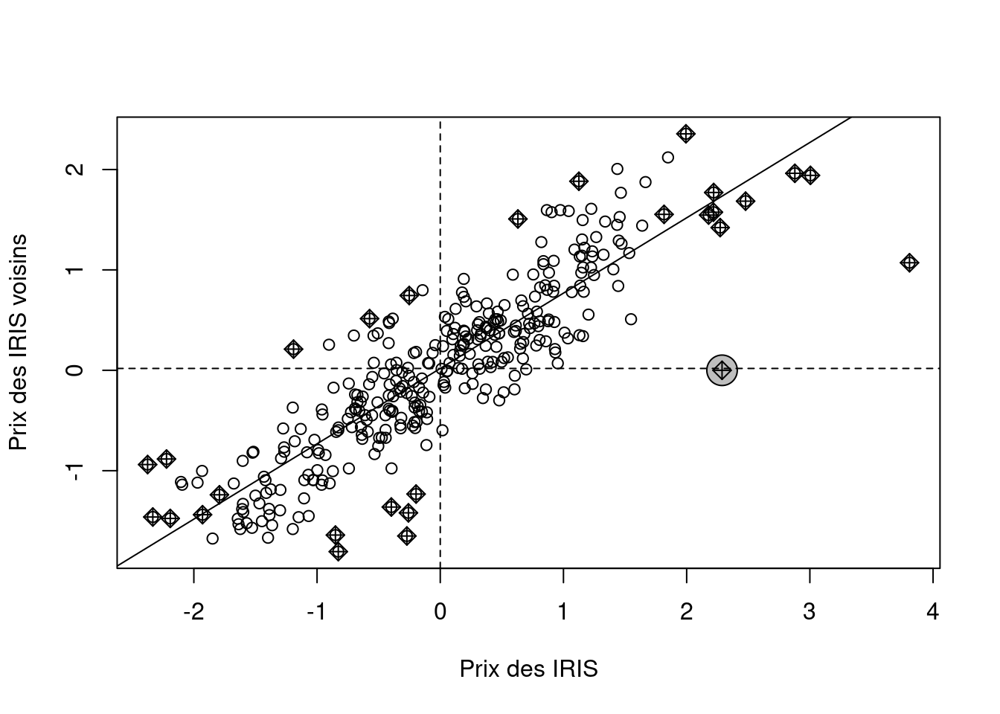
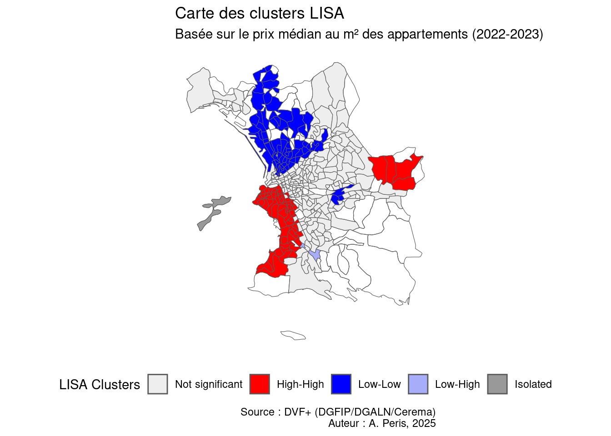

library(sf)
library(ggplot2)
library(dplyr)
library(ggspatial)Analyse spatiale
Ce tutoriel est très largement inspiré du cours de R. Leconte : https://github.com/leconter/SPACER/tree/main
Packages
Chargement des données
pxIrisMars <- st_read("../data/pxIrisMars.gpkg")On mets des NA pour les valeurs basées sur un nombre d’observation inférieur à 6.
pxIrisMars$pxm2med <- ifelse(test = pxIrisMars$nbmut < 6,
yes = NA,
no = pxIrisMars$pxm2med)Cartographie des discontinuités
Pour cartographier des discontinuités, il est nécessaire d’extraire des objets correspondant aux frontières entre les IRIS. Pour cela, on va :
extraire les géométries de nos IRIS;
faire une auto-intersection de buffers de n mètres autour des communes;
transformer le résultat de cette auto-intersection en lignes;
supprimer les lignes qui ne sont pas un point de contact entre deux IRIS;
créer un identifiant propre à chaque ligne à partir du code des deux IRIS.
iris <- pxIrisMars %>% select(CODE_IRIS, geom)
# Auto-intersection des communes (avec buffer, en mètres)
iris_borders <- st_intersection(st_buffer(iris, 10), st_buffer(iris, 10))
# Transformation des géométries en 'MULTILINESTRING'
iris_borders <- st_cast(iris_borders ,"MULTILINESTRING")
# Suppression des intersections entre un même polygone
iris_borders <- iris_borders [iris_borders$CODE_IRIS != iris_borders$CODE_IRIS.1, ]
# Construction d'un identifiant unique pour chaque frontière
iris_borders$CODE_IRIS1 <- iris_borders$CODE_IRIS
iris_borders$CODE_IRIS2 <- iris_borders$CODE_IRIS.1
iris_borders$CODE_IRIS <- paste0(iris_borders$CODE_IRIS1, "_", iris_borders$CODE_IRIS2)
rownames(iris_borders) <- iris_borders$CODE_IRIS
iris_borders <- iris_borders [,c("CODE_IRIS","CODE_IRIS1","CODE_IRIS2","geom")]
ggplot()+
geom_sf(data = iris_borders)
Grâce à la présence des deux identifiants, on effectue deux jointures pour ajouter l’information sur les prix des deux IRIS en contact sur une frontière donnée.
# Récupération de la variable d'intéret, en supprimant la géométrie associée
vals <- pxIrisMars %>%
as_tibble() %>%
select(CODE_IRIS, pxm2med)
# Double jointure pour récupérer les valeurs des NUTS limitrophes
iris_borders <- left_join(iris_borders, vals, by=c("CODE_IRIS1"="CODE_IRIS"))
iris_borders <- left_join(iris_borders, vals, by=c("CODE_IRIS2"="CODE_IRIS"))
# calcul de la discontinuité relative
iris_borders$disc <- iris_borders$pxm2med.x / iris_borders$pxm2med.y
# on ne conserve que les 10% des discontinuités les plus fortes
threshold <- 0.90
disc <- iris_borders[iris_borders$disc >= quantile(iris_borders$disc,threshold, na.rm = T),]
ggplot()+
geom_sf(data = iris)+
geom_sf(data = disc)
On cartographie ensuite ces discontinuités en reprennant le code du tutoriel précédent.
bks <- mapsf::mf_get_breaks(pxIrisMars$pxm2med, nbreaks = 6, breaks = "msd", central = T)
bks <- bks[-7]
ggplot() +
annotation_map_tile(type="cartolight", zoom = 11)+
geom_sf(data = pxIrisMars, aes(fill = pxm2med)) +
geom_sf(data = disc, aes(color="Discontinuité"))+
scale_color_manual(values = "black")+
scale_fill_fermenter(
breaks = bks,
palette = "YlOrRd",
direction = 1,
na.value = "lightgrey"
) +
theme_bw() +
coord_sf(datum = NA) +
annotation_scale() +
annotation_north_arrow(
height = unit(0.5, "cm"),
width = unit(0.5, "cm"),
pad_y = unit(0.7, "cm")
) +
labs(
fill = "Prix (€/m²)",
title = "Les discontinutés les plus fortes dans les niveaux de prix des IRIS",
subtitle = "Médiane du prix au m² des transactions de\n2022 et 2023 dans chaque IRIS",
caption = "Source : DVF+ (DGFIP/DGALN/Cerema)\nAuteur : A. Peris, 2025",
color="")
Auto-corrélation spatiale
Packages
library(spdep)
library(rgeoda)Indice global de Moran
L’indice global de Moran est une mesure statistique qui évalue le degré d’autocorrélation spatiale d’une variable sur l’ensemble d’une zone d’étude. Il indiquesi les valeurs similaires ont tendance à se regrouper dans l’espace.
Pour le calculer, on a besoin de construire une matrice de poids qui est un objet qui indique, pour chaque entité spatiale, son voisinage.
# Extraction des IRIS dont la valeur n'est pas NA
pxIrisWona <- pxIrisMars[!is.na(pxIrisMars$pxm2med),]
# Extraction de la liste des voisins (contiguïté d'ordre 1) pour chaque unité spatiale
pxIrisWona.nb <- poly2nb(pxIrisWona)
# Création de la matrice de poids permettant de calculer les valeurs moyennes du voisinage
pxIrisWona.lw <- nb2listw(pxIrisWona.nb, zero.policy = TRUE)Pour le calcul, on standardise les variables
# Standardisation de la variable d'intérêt (mesurée en écart à la moyenne de la variable)
pxIrisWona$px_std <- as.vector(scale(pxIrisWona$pxm2med))
# Diagramme de Moran
moran.plot(pxIrisWona$px_std, pxIrisWona.lw, labels = FALSE,
xlab = "Prix des IRIS",
ylab = "Prix des IRIS voisins")
Interpréter le diagramme de Moran
- Les observations situées en haut à droite (quadrant 1) présentent des valeurs de la variable plus élevées que la moyenne, dans un voisinage qui leur ressemble (autocorrélation spatiale positive et valeur de l’indice élevé ; structure high-high).
- En bas à gauche (quadrant 3), les observations présentent des valeurs de la variable plus faibles que la moyenne, dans un voisinage qui leur ressemble (autocorrélation spatiale positive et valeur de l’indice faible ; structure low-low).
- Les observations situées en bas à droite (quadrant 2) ont des valeurs de la variable plus élevées que la moyenne dans un voisinage qui ne leur ressemble pas (autocorrélation spatiale négative et valeur de l’indice élevé ; structure high-low).
- En haut à gauche (quadrant 4), les observations présentent des valeurs de la variable plus basses que la moyenne dans un voisinage qui ne leur ressemble pas (autocorrélation spatiale négative et valeur de l’indice faible ; structure low-high).
# Test du I de Moran
moran.test(pxIrisWona$px_std, pxIrisWona.lw, zero.policy = TRUE, randomisation = FALSE)
Moran I test under normality
data: pxIrisWona$px_std
weights: pxIrisWona.lw
n reduced by no-neighbour observations
Moran I statistic standard deviate = 21.542, p-value < 2.2e-16
alternative hypothesis: greater
sample estimates:
Moran I statistic Expectation Variance
0.750341681 -0.003030303 0.001223021 Interpréter le test de Moran
Quand I > 0, autocorrélation spatiale positive Quand I < 0, autocorrélation spatiale négative
La p.value permet de rejeter l’hypothèse nulle (absence de co-variation) pour un test à 1% si p-value < 0.01.
L’indice local d’autocorrélation spatiale (LISA)
L’indice d’autocorrélation spatiale locale mesure l’intensité et la significativité de la dépendance locale entre la valeur d’une variable dans une unité spatiale donnée et les valeurs de cette variable dans les unités spatiales voisines. Il permet donc :
d’identifier la participation de chaque unité spatiale au niveau d’autocorrélation spatiale global;
de mettre en évidence les “poches” de forte autocorrélation spatiale.
Pour le calculer, on suivra les étapes suivantes :
# création de la matrice de poids (format pkg rgeoda)
queen_w <- queen_weights(pxIrisWona)
# calcul de l'indice local de moran
lisa <- local_moran(queen_w, pxIrisWona['pxm2med'])
# extraction des clusters lisa
# choix du seuil de significativité
cats <- lisa_clusters(lisa)
# ajout de la colonne cluster à la table des communes
pxIrisWona$clusters <- factor(cats, levels = 0:6)
# Création d'un data frame pour faire correspondre les couleurs et les labels sur la figure.
lisa_cols <- data.frame(value = c(0:6),
colors=lisa_colors(lisa),
labels=lisa_labels(lisa))
# Cartographie
ggplot() +
geom_sf(data = pxIrisMars, fill=NA)+
geom_sf(data = pxIrisWona, aes(fill = clusters)) +
scale_fill_manual(
values = setNames(lisa_cols$colors, lisa_cols$value),
labels = setNames(lisa_cols$labels, lisa_cols$value),
name = "LISA Clusters"
) +
theme_minimal() +
labs(title = "Carte des clusters LISA",
subtitle = "Basée sur le prix médian au m² des appartements (2022-2023)",
caption = "Source : DVF+ (DGFIP/DGALN/Cerema)\nAuteur : A. Peris, 2025") +
theme(legend.position = "bottom")+
coord_sf(datum = NA)
Si l’unité spatiale étudiée présente une valeur forte dans un voisinage également marqué par des valeurs fortes, il y a situation d’autocorrélation spatiale positive avec des valeurs fortes, appelée High-High. Si l’unité spatiale présente une valeur faible et son voisinage également, on est également en situation d’autocorrélation spatiale positive mais du côté des valeurs faibles (Low-Low). Si l’unité spatiale possède une valeur forte dans un voisinage dont la moyenne des valeurs n’est pas forte, on parle d’autocorrélation spatiale négative qualifiée de High-Low. Si à l’inverse, l’unité spatiale possède une valeur faible dans un voisinage qui ne lui ressemble pas, on est en situation d’autocorrélation spatiale négative Low-High. Enfin, les autres unités spatiales sont rassemblées dans une dernière catégorie qui décrit une situation non significative.
Les communes rouges sont donc des espaces de concentration spatiale des quartiers aux niveaux de prix élevés. Les bleues, des prix bas. Les communes grises constituent un espace plus hétérogène.